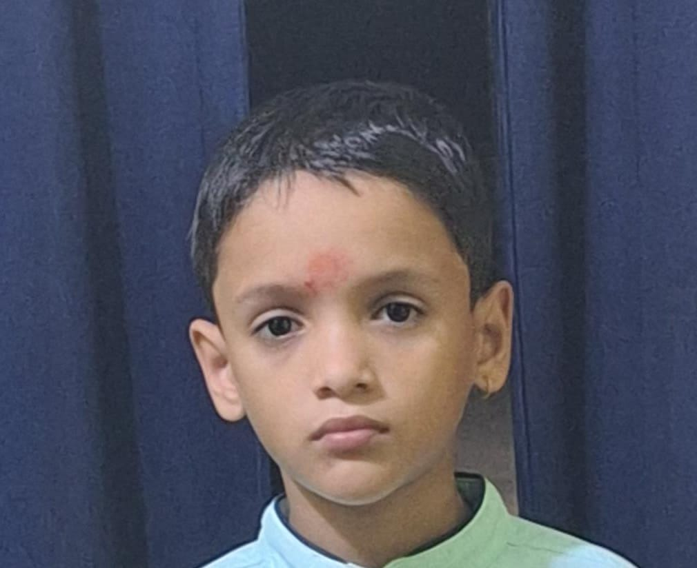

Building high-performance interactive web experiences, matrix digital graphics, and exploring software development from Jhapa, Nepal.
Telemetry metrics calculating exact temporal duration spent on planet Earth (Assumed DOB: February 27, 2014 / 2014-02-27).
High-performance HTML5 Canvas digital rain generator featuring configurable drop speeds, character sets (Binary, Katakana, Hex), and mouse interaction repulsion.
Lightweight in-browser hacker command prompt supporting 15+ built-in utilities, tab auto-complete, command history, and custom accent themes.
Real-time biological and astronomical telemetry calculator computing exact elapsed time, earth orbit distance, and heartbeats lived by human subjects.